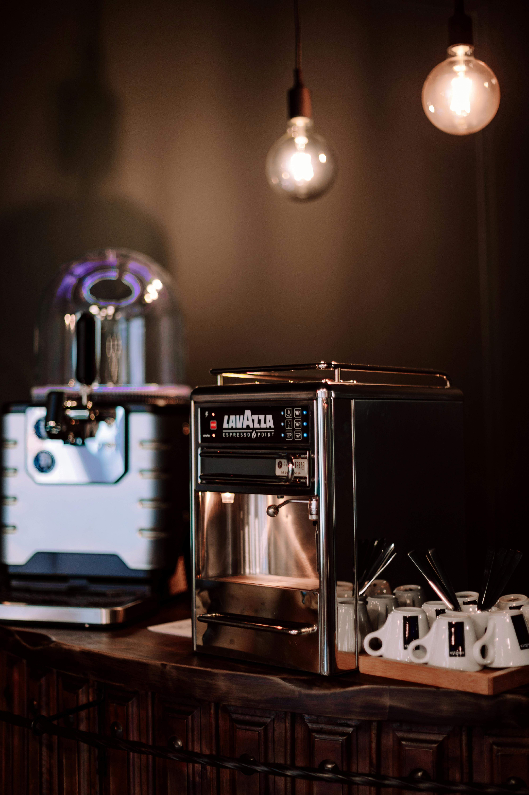
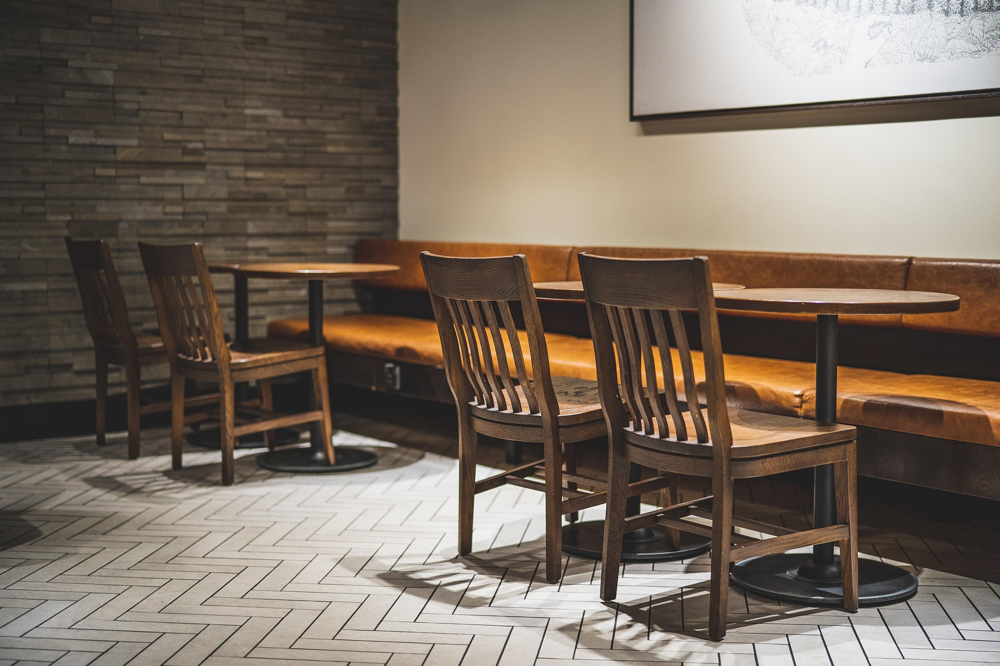

☕ A Arte de Transformar Grãos em Momentos
Bem-vindo à Grão & Arte, onde cada xícara conta uma história. Localizada no coração de Uberaba, nossa cafeteria é um refúgio para quem aprecia o verdadeiro café especial.
Torra Artesanal
Controlamos cada segundo do processo de torra para garantir que as notas sensoriais de chocolate, caramelo e frutas sejam preservadas.


Espaço Coworking
Oferecemos Wi-Fi de alta velocidade e um ambiente silencioso para você trabalhar enquanto desfruta do melhor café da região.